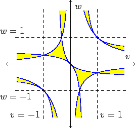

| A Discriminant |
|
25 |
Assume that the lines are tangent at the points corresponding to g(-1), g(0), and g(1), and the two secant points are at g(v) and g(w). We can compute a discriminant for this problem
| 1-vw | = | 1-w + w(1-v) |
| v + w - 2 v w | = | v(1-w) + w(1-v) |
|
We display this discriminant in the v, w plane. Yellow is where it is negative. The dotted lines and the axes are where v or w are equal to one of the tangent points. Note that it is positive when v and w lie in the same interval between two points of tangency. |  |